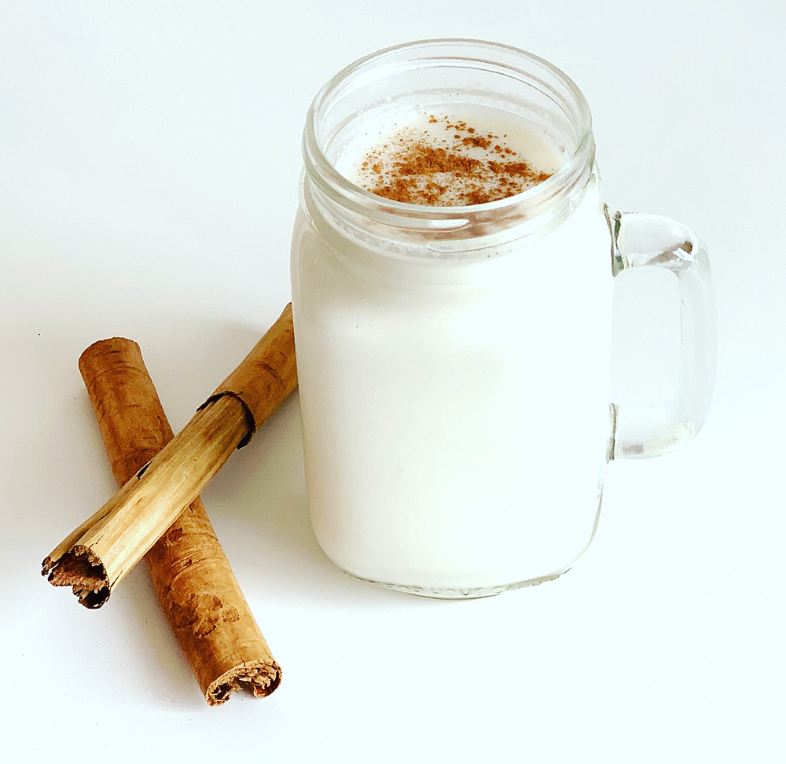

Agua de Horchata (Horchata water)

One of the most iconic drinks in Mexico. You will probably find it at any 'taquería' because of how good it tastes and how refreshing it is.
Ingredients
- 1 cup of rice
- 1 can of condensed milk
- 1 can of evaporated milk
- 2 lts of water
- 1 cinnamon stick
- sugar (to your wanting)
- Ice (to your wanting)
- 1 teaspoon of vanilla extract
Steps
- Clean the rice with water until the water remaining is no longer white.
- Boil the 2lts of water, add the rice once it's boiling and turn off the heat as soon as you add it. Then let it rest for at least 1 hour.
- Blend the water and rice.
- Pour the mix into a jug, add the 2 cans of milk, more water, sugar, vanilla extract and cinnamon; mix them until they're homogenous.
- Keep adding any of the above until the taste is to your liking